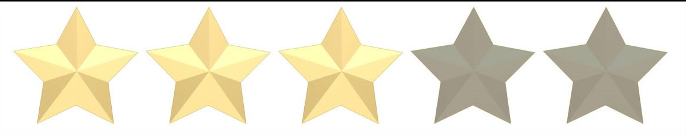

VOLVER A LA PÁGINA DE LIBROS
ALICIA EN EL PAÍS DE LA MARAVILLAS. |
 |
– “A mí no me importa demasiado a dónde…”, empezó a explicar Alicia. – “En ese caso, da igual hacia dónde vayas”, interrumpió el Gato. – “…siempre que llegue a alguna parte”, terminó Alicia a modo de explicación. – “¡Oh! Siempre llegarás a alguna parte”, dijo el Gato, “si caminas lo bastante”. |
 |
Este libro juega con la lógica, dando a la novela popularidad en el mundo infantil como en el mundo adulto. Es considerada una de las mejores novelas del llamado género del Sinsentido. Muchos de los personajes de este libro como el Conejo Blanco, la Liebre de Marzo, el Sombrerero, la Oruga azul, el Gato de Cheshire o la Reina de Corazones, han tomado importancia fuera de esta obra y han sido motivo de inspiración en el género fantástico. Attenhea, 2018
La verdad es que leer este libro fue como leer el relato de alguien que perdió la cabeza. Pero como el mismo Lewis lo dijo, todos la perdimos. La idea de que una niña esté sentada leyendo y de repente vea pasar un conejo corriendo no es rara. Ya si dicho conejo va hablando y diciendo que llega tarde es otro cantar. Annie, 2015 |